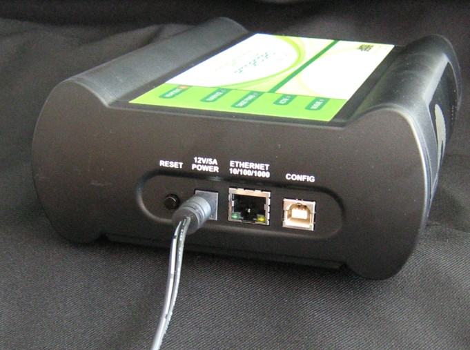

Connect the power supply DC cable connector to the POWER connector on the probe, shown in Figure 1‑4.
Caution
Use only the power supply that is provided with the probe. Although other power supplies might look similar, they can damage the probe if the supply specifications differ from the required specifications.
Figure 1‑4. Sourcery Probe Professional with Power Cable Attached